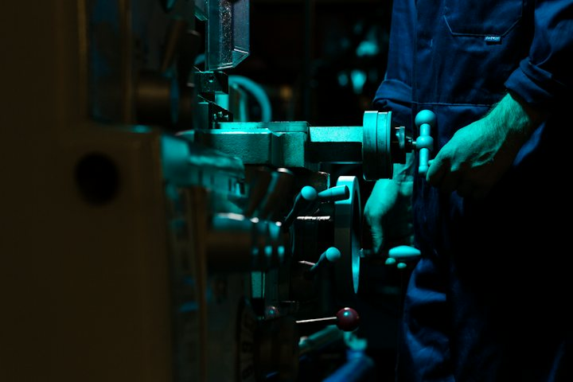

Warm-up · Pay now or pay later?
Three decisions. For each one, choose: save money today, or pay today and save later?
Pay now or pay later?
Said 0 / 3Teacher notes · §1 Warm-up
Pedagógica
- Tres decisiones de costo con la cuenta a seis meses. El alumno elige "ahorrar hoy" o "pagar hoy", dice My choice is …, because … y después ve el total. El tercer caso es una trampa a propósito: ahí lo barato SÍ gana. Todavía no presentes la estructura del día; escucha cómo compara por instinto.
- Línea del desacuerdo: unos dicen "compra siempre lo más barato, el dinero de hoy es el que cuenta"; otros dicen "lo barato sale caro al final". No resuelvas: es el motor de la sesión.
- Máximo 4 minutos. Tema: Seguro (casos de planta ficticios, nada personal). Temperatura: Engaging.
Engagement
- "Sin calcular: ¿ahorras hoy o pagas hoy?" Pide que digan su elección ANTES de revelar las cuentas; después compara cuántos acertaron en el caso 3.
- Cierra en voz alta con la frase del recuadro verde.
Crecimiento
- Anota si el alumno ya dice comparativos por instinto (cheaper, more expensive): es línea base para el §3.
- Riesgo: Seguro. Temperatura: Engaging.
Vocabulary · 12 words for cost and risk

Tap to flip · listen to the word and the example
0 / 12 flippedSixty-Second Sell
Round 1 / 3Sell points 01. Pick ONE word from the pair. 2. You have 60 seconds: why THIS word and not the other? Use it in a real plant situation. 3. The listener votes “Buy” or “Pass”. Points come from the language you produce; the vote only adds a bonus.
Teacher notes · §2 Vocabulary
Pedagógica
- Voltea cada tarjeta: tú dices la palabra, el alumno repite y da su ejemplo. Palabras difíciles: maintenance (MEIN-te-nans, 3 sílabas), hidden (/ˈhɪdn/) y invest (acento en -VEST). In the long run y in the short term son chunks: se enseñan completos.
- VOC-10 Sixty-Second Sell (CONTRARRELOJ): tres pares (invest in / spend money on, repair / fix, hidden cost / extra cost). El alumno elige UNA palabra del par y tiene 60 segundos para defender por qué esa y no la otra, dentro de una situación real de planta. La diferencia es de connotación y registro, no de significado. Los puntos salen de producir (3 casillas); el voto de "Buy" solo suma un bono de +2.
- escalation_note (la dinámica vuelve de S4): antes era una palabra contra su sinónimo sin situación. Ahora son pares con diferencia de connotación, 60 segundos exactos y la exigencia de ubicar la palabra en una situación real de planta.
- Setup en menos de 3 minutos. En 1:1 tú votas con el pulgar. Si el tiempo aprieta, la ronda 3 va en 45 segundos.
Engagement
- "Tienes un minuto. Véndeme la palabra."
- Cierre en voz alta: "__ sell points. My best sell was __."
Crecimiento
- Anota qué par le costó más: casi siempre hidden cost / extra cost.
- Los puntos de venta se mencionan en el §6: es el mismo vocabulario que vende la decisión.
Grammar · The more …, the more …
Read the chat. Which pattern repeats?

The cheaper the belt, the faster it wears out.
The longer we wait, the more it costs.
And the sooner we act, the more we save.
So the right choice is not always the cheapest one.
The + comparative, the + comparative
1 · The pattern
The longer we wait, the more it costs.
2 · Short adjectives
The cheaper the part, the faster it breaks.
3 · Long ones, less, fewer
The more expensive the tool, the longer it lasts.
| Statement, negative, question | Notice | |
|---|---|---|
| + | The longer we wait, the more it costs. The sooner we act, the more we save. | Both parts begin with the. |
| − | The less we check it, the more it breaks. The fewer parts we have, the slower the repair is. | Less / fewer also work. Fewer + plural. |
| ? | What happens the longer we wait? Does it cost more the longer we wait? | The pattern can end a question. |
Never: more cheap, more we wait, the most we save. Short adjective = -er. Long adjective = more + adjective. Both parts need the.
¿Qué es? La estructura para decir que dos cosas crecen (o bajan) juntas: The + comparativo, the + comparativo. Sirve para costo y riesgo: The longer we wait, the more it costs.
¿Cómo se usa? Las dos partes empiezan con the. Adjetivos cortos: cheaper, faster, sooner. Largos: more expensive. También the more / the less / the fewer: The more we wait, the more we pay.
¿Para qué hoy? Para decir qué pasa con el costo si esperas, si compras barato o si cuidas la máquina.
Cuidado: no se dice The more cheap (se dice the cheaper), ni More we wait, more we pay (falta the), ni the most we save (the most es otra estructura: el superlativo).
Right or wrong? Bet first
Sentence 1 / 6Bank 101. Choose your bet: 1, 2 or 3 points. 2. Say if the sentence is correct or has an error. 3. Right call = you win the bet, but only after you SAY the sentence (or the repair) out loud. Wrong call = you lose the bet. Calling an error on a correct sentence costs one extra point.
Build it, then make it true for your plant
True sentences 0 / 3Choose the pieces. If the sentence is not true in your plant, change a piece until it is. Then say it, with no notes.
Talk about your plant
Checks 0 / 4Choose a topic. Say three sentences with your own words and no notes: two with The …-er …, the …-er …, and one decision.
Mistakes at this level
Teacher notes · §3 Grammar
Pedagógica
- Un solo punto: The + comparativo, the + comparativo (correlativo comparativo) para costo, riesgo y tiempo. Retoma comparativos de S9–S10 y It’s better to … than to … de S11. Explicación continua ≤5 min; el botón en español está oculto por defecto.
- GRM-01 Bet the Sentence (APUESTA), etapa mecánica → meaningful: Practice A es la parte mecánica (seis oraciones, tres con error). Apuestan antes de decidir y los puntos se cobran SOLO si el alumno dice en voz alta la oración o su corrección. Practice B (meaningful): el alumno arma la oración con piezas y la hace verdadera para su planta. Practice C (comunicativa): tres oraciones propias sin notas. La mecánica es ≤1/3 del bloque.
- Límites: sin would ni hipótesis (llega en S25), sin should/could (Block 3), sin reported questions, sin negociación. El superlativo (the most) aparece solo como error a evitar.
- Errores prioritarios: the more cheap, falta de the, the most en vez de the more.
Engagement
- "Apuesta antes de pensar demasiado. Si te equivocas, pierdes lo apostado."
- Si el alumno apuesta 3 en todas, pregunta cuál fue la que no vio venir.
Crecimiento
- Anota el banco final y si hizo oraciones propias sin las piezas: línea base para S14.
- Venta: la estructura funciona con cualquier decisión de compra o mantenimiento del cliente.
Listening · Gapped chunks

Monday meeting. Laura, the plant manager, talks with Kenji, the maintenance supervisor, about the sealing machine on Line 2. The written transcript has holes. Listen and collect the missing chunks.
Practice audio: two different browser voices (not true accents). Final audio: recorded with ElevenLabs.
Gapped Chunks: collect all eight
Collected 0 / 8Listen to the meeting. Tap a gap, then tap the chunk that fits. One chunk in the bank does not belong. Then check.
Check the decision
Use two chunks to explain the decision
The script (Monday meeting)
Laura · US English · female · plant manager, practical | Kenji · Japanese-accented English · male · maintenance supervisor, calm, natural paceListen · repeat · record your best
Teacher notes · §4 Listening
Pedagógica
- LIS-09 Gapped Chunks (COLECCIÓN): los huecos están SOLO en chunks funcionales (in the short term, in the long run, upfront cost, hidden cost, it’s worth it y tres patrones The …-er …, the …-er …), nunca en sustantivos de contenido. El alumno junta los ocho chunks del banco; hay uno de más (on schedule). Después usa dos de ellos hablando (Task 3).
- Guion: 205 palabras (B2: 180–300), 2 hablantes. Contiene el punto del día cuatro veces (cheaper…faster, longer…more, sooner…more) y ocho elementos del léxico. Sin would, could, should ni hipótesis. More expensive y better aparecen como comparativos ya vistos.
- Para grabar (13 clips, uno por línea): Laura = inglés de EE. UU., mujer, ritmo natural, práctica · Kenji = inglés con acento japonés, hombre, ritmo natural, tono tranquilo. Cumple el mínimo de acento no nativo del programa.
- Answer key. Task 1: (1) In the short term · (2) in the long run · (3) The cheaper the belt, the faster it wears out · (4) upfront cost · (5) hidden cost · (6) The longer we wait, the more it costs us · (7) it’s worth it · (8) The sooner we do it, the more we save. Distractor: on schedule. Task 2 (global): Kenji recomienda el servicio completo · (detalle) el servicio detiene la línea seis horas · el costo oculto de la banda: cada falla detiene la línea dos horas y el cliente espera.
Engagement
- "Escucha dos veces: la primera para la idea, la segunda para cazar los chunks."
- Cuenta cuántos chunks cazaron en la primera escucha.
Crecimiento
- "In the next block you recommend things, so listen for decisions and reasons."
- Registra qué chunk se les escapa más: casi siempre el patrón largo.
Speaking · Defend a side you did not choose

1. Draw a secret stance for the decision. 2. Defend it for 90 seconds, even if you do not agree. Use The …-er …, the …-er …, a risk and one concession (“It’s true that …, but …”). 3. Your listener tells you if they believed you.
1:1: you and the teacher take turns defending.
Three decisions · 90 seconds each
Points 0Turn 1 / 312 questions · always 2 follow-ups
Teacher notes · §5 Speaking
Pedagógica
- SPK-03 Devil’s Advocate Draw (ROL OCULTO): cada turno sale una decisión de costo con dos posturas; el alumno saca una al azar y la defiende 90 segundos aunque no coincida con lo que piensa. Obligatorio: The …-er …, the …-er …, un riesgo y una concesión (It’s true that …, but …). En grupo rotan; en 1:1 alternas tú y el alumno.
- escalation_note (la dinámica vuelve de S2): en S2 bastaba defender la postura. Ahora hay tres exigencias de lengua por turno (estructura del día, riesgo y concesión) y la decisión es de costo real.
- Puntaje: el punto se gana por producir lengua. Cada casilla marcada vale 1 punto (máximo 4) y el bono de +2 solo lo da el oyente que casi le creyó. Entre turnos usa las 12 preguntas del mazo (~3 min). Tarjetas con menos de 100 palabras (tope B2). Tema: Seguro; los tres casos son ficticios y nadie defiende el área de otro.
- Cierra con el resultado en voz alta: puntos totales y la postura que más costó defender.
Engagement
- "No elegiste tu lado. Hazlo creíble."
- Si el grupo domina el turno 1, en el turno 3 pide que la concesión sea la primera frase.
Crecimiento
- Registra si el alumno usa la concesión sin que suene forzada: es producción libre del punto del día.
- Venta: SPK-03 entrena exactamente la conversación con un jefe que pide lo más barato.
Mission · The cost brief

The Cost Brief
You lead a small team. Your manager asks for the cheapest option three times this week. For each case, say the cheap option and its upfront cost, the hidden or long-term cost, and your decision.
Group: each case goes to one student in a breakout room. Your partner asks “What happens if we choose the cheap one?” once per case. Rotate every 3 minutes.
1:1: you brief the teacher. The teacher asks “What happens if we choose the cheap one?” once per case.
Success: 3 briefs, each with the cheap option and its upfront cost, a hidden or long-term cost, The …-er …, the …-er … and a clear decision.
Teacher notes · §6 Mission
Pedagógica
- Marca cada movimiento solo cuando el alumno lo dice sin leer la tarjeta.
- Evidencia observable: opción barata con su costo inicial (upfront cost), costo oculto o de largo plazo, una oración con The …-er …, the …-er … y decisión con It’s better to … than to …. La clave está en Teacher view. Es válido recordar If …, we’ll … (S12).
- El caso 2 (guantes) lleva una cuenta simple: barato = 2 dólares por par × 20 operadores × 5 semanas = 200; mejor = 6 × 20 = 120. Deja que el alumno la diga en voz alta.
- No interrumpas: el feedback va en §7.
Engagement
- Anuncia: "__ of 12 moves."
- Si alguien dice the more cheap, anótalo para el §7 sin corregir.
Crecimiento
- "In Session 14 you compare two ways to meet."
- Conecta con la tarea final: una conversación estratégica de 3–4 minutos donde defiendes una decisión con razones de costo y riesgo.
Wrap-up · Better the second time
✓ Success
↑ Upgrade
✎ Repair
↻ 2nd try
Repeat one briefing with the teacher. Use the upgrades. Same task, better English.
60 seconds · 5 questions
My second try is better because…
You can compare a cheap option with a better one and say what each really costs.
Homework: write 5 sentences about your job: one cheap option, one hidden cost, and one decision. Use The …-er …, the …-er …, but and because. Next: Session 14.
Teacher notes · §7 Wrap-up
Pedagógica
- Máximo 2 aciertos y 3 correcciones de alto valor, anónimas. Luego segundo intento de un brief de la misión contigo.
- Revisa los errores del punto: the more cheap, falta de the, the most en vez de the more. Exit quiz en voz alta.
Engagement
- Compara con el §1: "Minute 1: save or pay. Minute 58: upfront cost, hidden cost and a decision."
Crecimiento
- Registra: banco de apuestas, puntos de venta, puntos del debate y misión.
- Antes de S14: pide un ejemplo real de una reunión que pudo ser un correo.